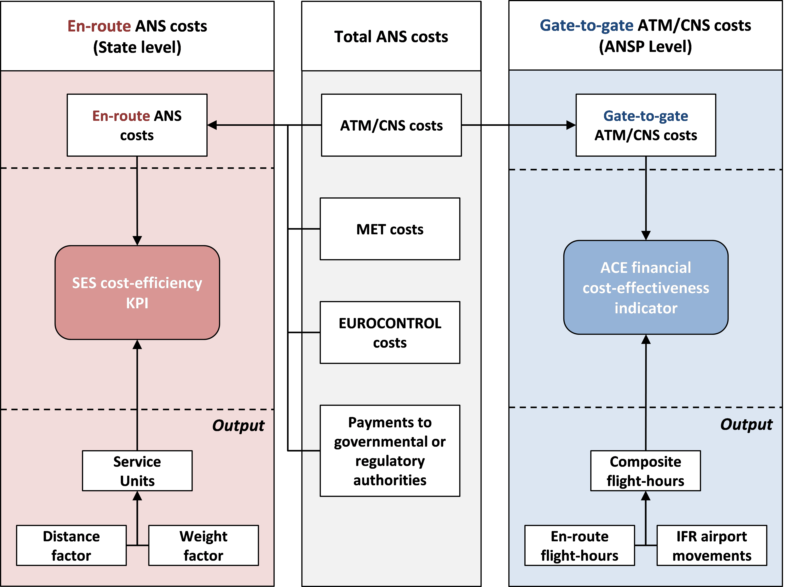

6 ANSP benchmarking and the SES Performance Scheme
The objective of this chapter is to explain the main differences between the ACE financial cost-effectiveness indicator and the Single European Sky (SES) en-route cost-efficiency KPI (as defined in Regulation (EU) N°2019/317 (European Commission 2019)).
First of all, it should be noted that these two indicators have been specified in response to different needs:
The purpose of the ACE analysis is to benchmark the cost-effectiveness performance of ANSPs in providing gate-to-gate ATM/CNS services (where en-route and terminal ATM/CNS are considered together). The ACE financial cost-effectiveness indicator is computed as the ratio of ATM/CNS provision costs to composite flight-hours and it can be broken down into three components (ATCO-hour productivity, ATCO employment costs per ATCO-hour and unit support costs). These components allow interpreting the differences in cost-effectiveness performance observed across Pan-European ANSPs. The ACE benchmarking analysis also informs ATM stakeholders on the level and trends of the Pan-European system cost-effectiveness performance.
The en‐route cost‐efficiency KPI (the Determined Unit Cost or DUC), which is defined in the Performance Scheme regulation, is used as part of the SES cost‐efficiency performance target‐setting and monitoring processes. This KPI is computed as the ratio of en‐route ANS costs (in real terms) to service units at charging zone level, and reflects the costs of several entities, not only the ANSP. The en-route ANS costs (in nominal terms) and service units also form the basis to calculate the unit rate that is billed to airspace users within a charging zone.
The ACE benchmarking reports complement the SES target setting and monitoring activities by providing a detailed comparison of cost-effectiveness performance at ANSP level including a trend analysis of three main economic drivers (productivity, employment costs and support costs).

As shown in Figure 6.1, the main differences between the ACE financial cost-effectiveness indicator and the SES en-route cost-efficiency KPI are the following:
Operational scope: En-route and terminal costs are considered together when benchmarking the economic performance of ANSPs in the ACE analysis. It is important to consider a “gate-to-gate” perspective because the boundaries used to allocate costs between en-route and terminal ANS vary between ANSPs and might introduce a bias in the cost-effectiveness analysis. On the other hand, the SES cost-efficiency KPI is computed for en-route and terminal ANS separately, for the purposes of the target-setting and/or monitoring processes.
Service scope: Total ANS costs (including costs relating to the ANSPs, METSPs, EUROCONTROL, and NSAs) are used to compute the SES cost-efficiency KPI, while only the ANSPs ATM/CNS provision costs are included in the ACE benchmarking analysis.
Measure of the output: The output metric used to compute the SES en-route cost-efficiency KPI is the number of en-route service units1. This metric is a function of the aircraft weight and of the distance flown within a given charging zone. This is the metric which has been historically used to compute the en-route unit rate charged to airspace users. On the other hand, the ACE financial cost-effectiveness indicator is computed using composite flight-hours, which combine both flight-hours and IFR airport movements (see Section 3.1). It should be noted that the geographical area controlled by ANSPs operational units can substantially differ from the charging zones in case of delegation of ANS. The composite flight-hours therefore better reflect the operational activity performed by ANSPs, while service units are more appropriate when charging zones are considered.
\(\text{Service}\ \text{unit} = \text{distance factor} \times \ \sqrt{\frac{\text{MTOW}}{50}}\)
According to EU Regulation 2019/317 (European Commission 2019, Annex VIII 1.1 and 1.2), the en route service units shall be calculated as the product of the distance factor and the weight factor for the flight concerned. […] The distance factor in respect of a given charging zone shall be obtained by dividing by one hundred the number of kilometers flown.↩︎